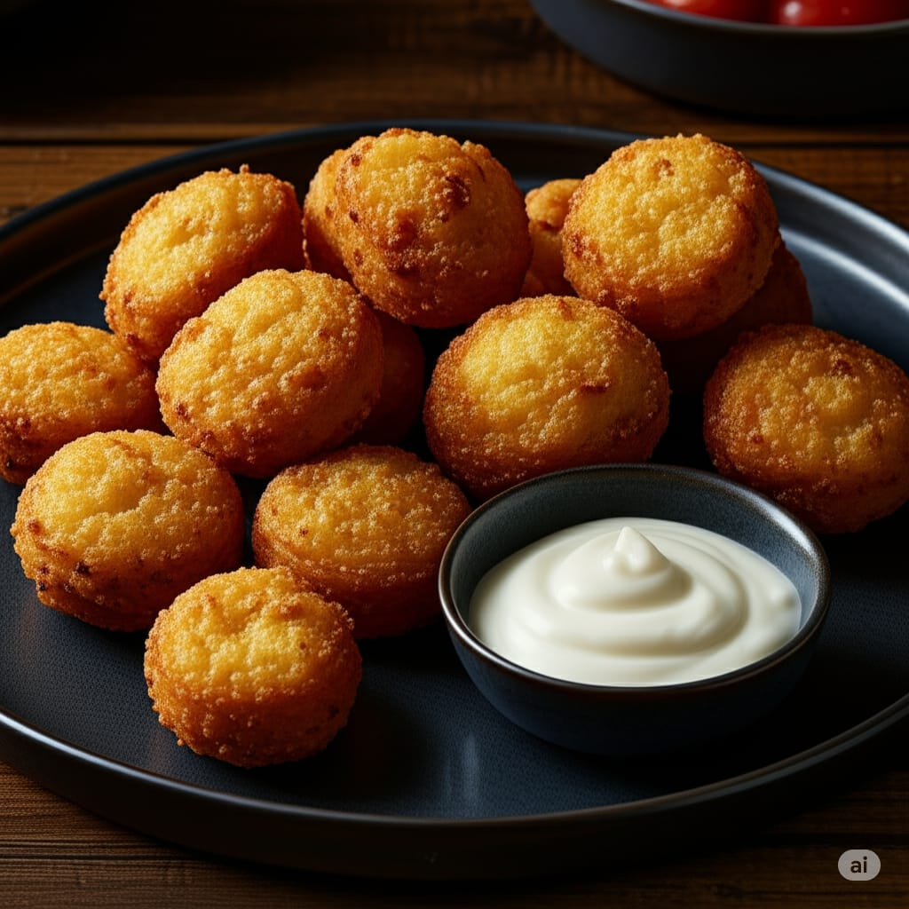

תפוחי אדמה טריים חתוכים בעבודת יד ומטוגנים עד פריכות זהובה
₪18כדורי סולת במילוי בשר מתובל, מטוגנים עד קראסט פריך
₪18בורקס פריך במילוי גבינה מלוחה, מוגש עם רוטב עגבניות
₪18כדורי חומוס מתובלים, מטוגנים בשמן עמוק לפי המסורת
₪18גלילי בצק פריך במילוי בשר טחון עסיסי
₪18